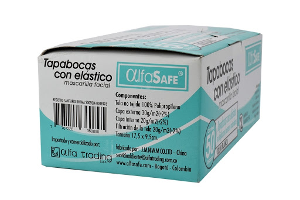
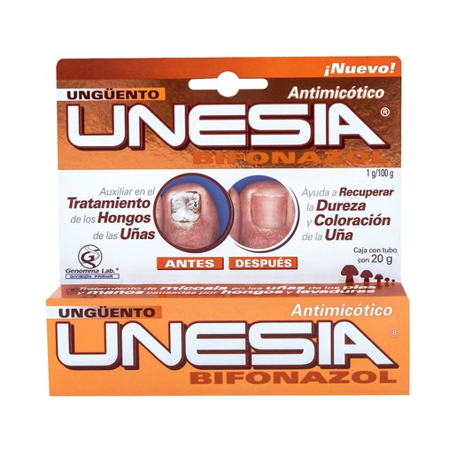

Solo una llamada podrás solicitar de manera fácil,
rápida y segura tus productos de farmacia,
nosotros te lo entregaremos en la puerta de tu casa u
oficina a un precio favorable.
PRODUCTOS PARA COMPRAR
$11.800
Se utiliza como medicamento para tratar el dolor, la fiebre y la inflamación, debido a su efecto inhibitorio, no selectivo, de la ciclooxigenasa.

$10.000
Los tapabocas deben usarse solamente por un día. Debes cambiarlo en caso de que se humedezca por causa de las secreciones o si se deteriora

$25.000
efectuar un ligero masaje preferentemente antes de acostarse. Generalmente es suficiente una pequeña cantidad del medicamento.
$9.800
Siendo la desinfección y participan fabricación de
ambientadores y perfumes, respectivamente,las más importantes.
podran encontrar este producto.
$19.500
Es efectivo contra el dolor y la fiebre, es usado aún si tienes un estómago
sensible o con riesgo de úlcera gástrica.
$8.000
está indicado para el tratamiento sintomático de la hiperacidez de estómago y ardor causado por el reflujo ácido del estomago.
La Farmacia de Servicios
Personas que entran en la farmacia
Para conocer estas personas se pueden utilizar unas fichas donde se reflejará: edad, sexo, apreciación del poder adquisitivo, motivo de la compra en esa farmacia, cliente fijo o de paso, productos más comprados,
comentarios efectuados en el momento de realizar la compra.Las droguerías deben manejar los medicamentos en forma adecuada, refrigerados en caso de ser vacunas y productos biológicos o bajo llave cuando se trata de medicamentos de control especial, cuyo despacho se debe efectuar contra la presentación de la respectiva fórmula médica la cual debe ser retenida.
Los antibióticos sólo serán despachados contra fórmula médica.
Asesoría y asistencia técnica
En desarrollo y cumplimiento de las visitas de inspección, vigilancia y control se dará, de manera permanente,
asesoría al representante legal o a quien este encargado del establecimiento. Esta asesoría estará dirigida a capacitar,
actualizar y orientar en el mejoramiento de la infraestructura física e instalaciones, manejo adecuado de medicamentos
eliminación segura de residuos y programas de promoción de la salud y prevención de la enfermedad. Los servicios
vinculados a las especialidades farmacéuticas publicitarias (EFP) y a otros productos de parafarmacia pueden ser mucho
más variados y tienen como principal objetivo fidelizar a los clientes y maximizar el beneficio de la farmacia.
La oferta de servicios
Los servicios asociados exclusivamente a receta que puede ofrecer una farmacia pueden ser:
Control de glucosa y colesterol.
Seguimiento farmacoterapéutico.
Medición del pulso, presión arterial y monitorización ambulatoria de la presión arterial (MAPA).
Formulación magistral.
Prohibiciones del dispensador
Cambiar el principio activo, concentración, forma farmacéutica, vía de administración, frecuencia, cantidad y la dosis prescrita.
Dispensar medicamentos alterados o fraudulentos.
Recomendar a los usuarios la utilización de medicamentos.
Tener muestras médicas de medicamentos.
Dispensación de medicamentos
Es la entrega de uno o más medicamentos y dispositivos médicos a un paciente y la información sobre su uso
adecuado realizada por el Químico Farmacéutico y el Tecnólogo en Regencia de Farmacia. Cuando la dirección
técnica de la droguería, o del establecimiento autorizado para la comercialización al detal de medicamentos,
esté a cargo de personas que no ostenten título de Químico Farmacéutico o Tecnólogo en Regencia de Farmacia
la información que debe ofrecer al paciente versará únicamente sobre los aspectos siguientes: condiciones de
almacenamiento; forma de reconstitución de medicamentos cuya administración sea la vía oral; medición de la dosis;
cuidados que se deben tener en la administración del medicamento; y, la importancia de la adherencia a la terapia.
Congelamiento o suspensión temporal de la venta o empleo de productos
consiste en colocar por fuera del comercio cualquier producto u objeto mientras se toma una decisión definitiva al respecto.
El congelamiento o suspensión temporal implica la entrega en depósito de los productos objeto de la medida.
En el acta de la diligencia,se dejará constancia de las sanciones en que incurre quien viole o incumpla la medida.
El producto cuya venta o empleo ha sido suspendido o congelado, deberá ser sometido a un análisis en el cual se verifique si
sus condiciones se ajustan o no a las normas sanitarias. Según el resultado final del análisis,
el producto se podrá decomisar o devolver a los interesados.

 Inicio
Inicio Producto
Producto Pedido
Pedido Contacto
Contacto